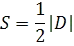

ALINHAMENTO DE 3 PONTOS
Requisitos
Geometria PlanaÁlgebra
Matrizes
Definição
Quando são escolhidos 3 pontos em um plano cartesiano, existem 2 possibilidades: ou os pontos são colineares, sendo todos parte de uma reta, ou eles não são colineares, formando um triângulo. É possível, a partir das coordenadas dos 3 pontos, determinar qual dos 2 casos é verdadeiro. Para isso, é feita uma matriz 3x3 com as coordenadas dos pontos nas 2 primeiras colunas, e a última coluna é preenchida de 1s.
Caso o determinante da matriz seja igual a 0, então os pontos são colineares. Caso contrário, eles formam um triângulo. Como revisão, aqui está o cálculo do determinante de uma matriz 3x3:

Que é equivalente a:

Quando os pontos formam um triângulo, é possível calcular a área desse triângulo através da simples fórmula:

Onde |D| é o determinante
Ponto A: ,
Ponto B: ,
Ponto C: ,
Ponto B: ,
Ponto C: ,
Veja mais em